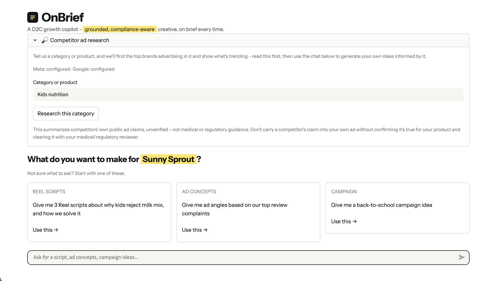

A D2C growth copilot: grounded, compliance-aware creative, on brief every time. Ask for a script, ad concepts or a campaign idea, and every idea comes back with its reasoning and the source it drew from.
01 · pick a brand: each card loads its catalogue, reviews and past campaigns

02 · research the category, then start from a prompt or ask your own
HOW IT WORKS
01Pick a brandloads its data and context, no typing
02See competitorswhat's running in your category right now
03Aska script, ad concepts, a campaign idea
04Check the receiptsevery idea shows its reasoning and source
CHOICES I MADE
→ Receipts on every idea: you can see why it was suggested and where it came from.
→ Only what matters: it pulls the relevant bits of brand info, your data and competitor ads, not everything at once.
→ Compliance-aware: ideas stay inside what the brand is actually allowed to claim.
THE AD SCRAPER
✓ pulls live ads from Meta + Google
✓ top brands in your category
✓ what's trending, before you write
BUILT
WHY I BUILT IT
Writing ad scripts was the part of category I hated. So I built something to do it for me.
SUBMITTED hiring round
FILE 02 · NEW PRODUCT DEVELOPMENT
Mosaic Pulse
A scraper reads through what people complain about on Reddit and across the internet. Pulse finds the complaints worth solving and turns them into product ideas, with who it's for, the format and a price band.